Ébénisterie d'art près d'Angers, depuis 1995
De l'abattage au meuble estampillé et signé.
Chaque hiver, nous abattons nous-mêmes nos arbres. Sciés dans notre scierie puis séchés à l'air libre pendant plusieurs années, ils servent à restaurer ou à fabriquer vos meubles, entièrement dans notre atelier.
Par e-mail : chaillou.atelierdugrandmoulin@
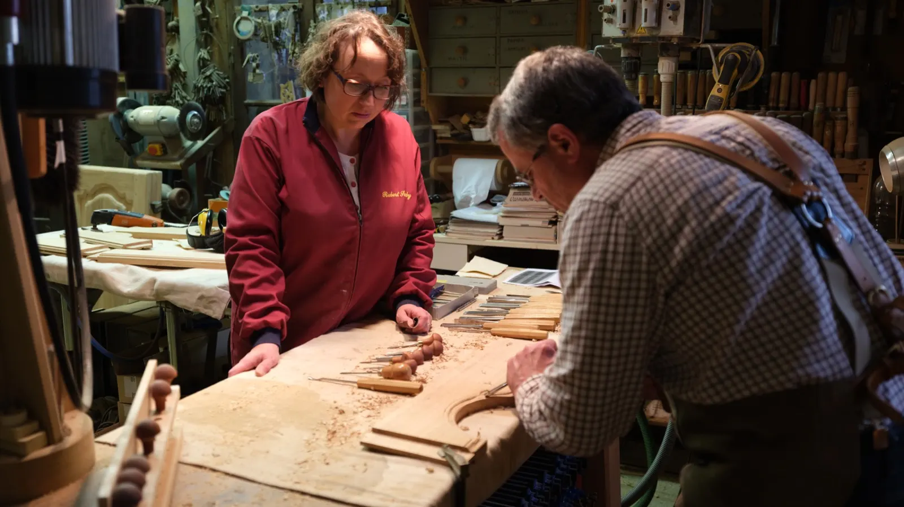
Sculpture à l'établi, gouges alignées- Depuis 1995
- Près d'Angers, en Anjou
- Abattage, sciage, séchage sur place
- Bois séché entre 9 et 13 %
- Estampillé et signé
Notre passion pour le bois, alliée à l'amour du patrimoine.
Nous avons créé notre atelier d'ébénisterie en 1995, en Anjou, près d'Angers. Nous associons notre créativité et notre savoir-faire à vos commandes spéciales, pour des réalisations sur mesure, quelle qu'en soit la dimension.
Tradition et innovation : nous voulons perpétuer et conserver l'héritage de nos ancêtres pour les générations futures. Par gage de qualité, toutes nos restaurations et réalisations sont estampillées et signées.
Cinq domaines
- Restauration du mobilier civil
- Fabrication du mobilier civil
- Restauration de l'art sacré
- Restauration du patrimoine ancien
- Création contemporaine
Avant le meuble, il y a l'arbre.
Nous avons depuis longtemps choisi de transformer le bois dans notre propre atelier. Cela demande beaucoup de patience et de longues heures de travail, mais c'est indispensable pour obtenir une matière première maîtrisée et de qualité.
-
1
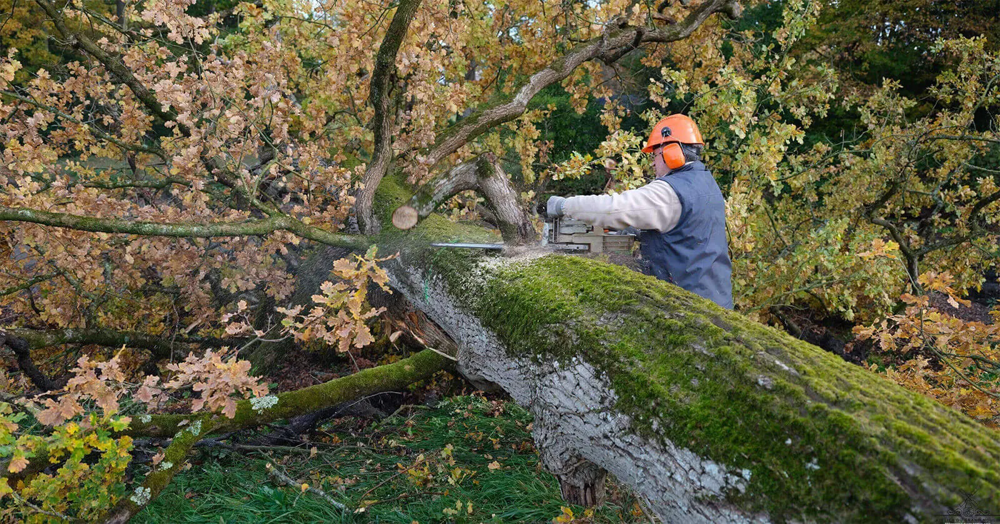
Abattage
À des moments choisis de l'hiver, nous abattons nos arbres, en forêt ou chez le particulier : noyer, merisier, tilleul, chêne, frêne, poirier, if, buis, orme, érable…
-
2
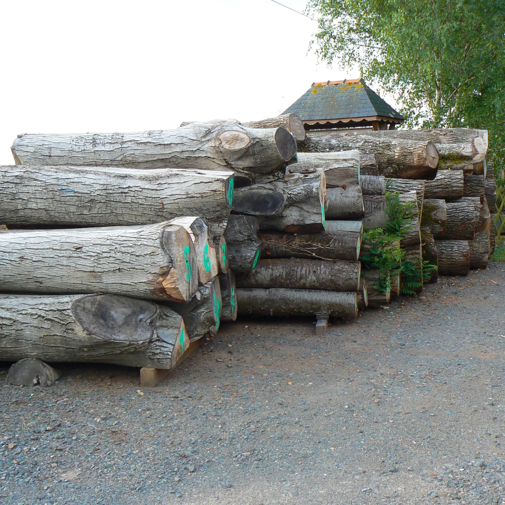
Sciage
Notre scierie débite les grumes « façon 18e » : toutes les épaisseurs d'un meuble sortent d'une même grume. Les chutes chauffent l'atelier.
-
3
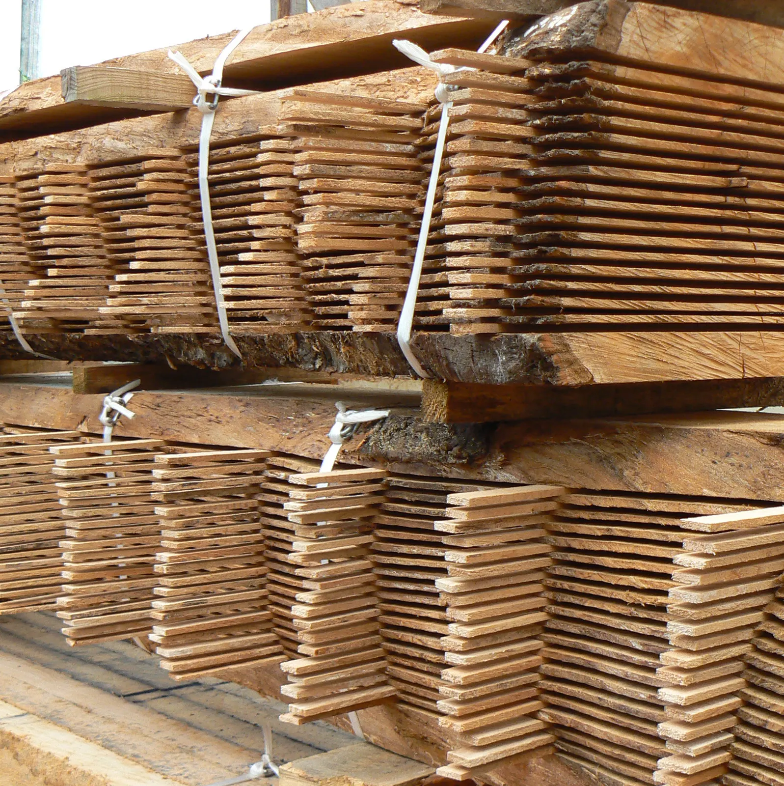
Séchage et débit
Les planches sèchent à l'air libre plusieurs années, jusqu'à 9 à 13 % d'humidité. Ensuite seulement, nous les délignons pour vos meubles.
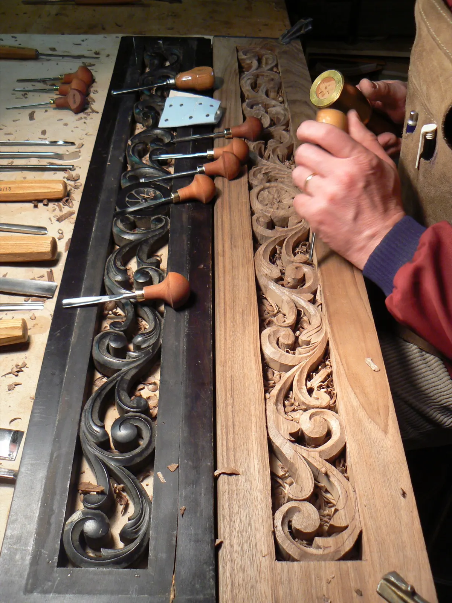
Panneau à rinceaux, à côté de l'ancienTout se fait chez nous, jusqu'à la serrure.
Nos prestations sont entièrement réalisées par nos soins, dans notre atelier.
Sculpture
Bas-relief, haut-relief et ronde-bosse.
Tournage
Colonnes, balustres et pieds de table jusqu'à 2,50 m de long ; en tournage frontal, pièces jusqu'à 90 cm de diamètre. Filetages de différents diamètres.
Marqueterie
Notre propre placage, de 6/10 de millimètre à 2 mm. Incrustations de laiton, cuivre, nacre, écaille de tortue, ivoire et corne.
Peinture et finitions
Polychrome ou monochrome, teinte cire à l'ancienne, Noir Napoléon, vernis à l'ancienne, huile biologique, sérigraphie sur verre.
Bronze et petite ferronnerie
Serrures, ferrages et entrées de clés restaurés ou recréés à l'identique.
Marbres et polissage
Dessus de commode, buffet ou chevet : greffes en inox, puis polissage à la main (1 cm d'épaisseur au minimum).
Décapage écologique
Par aérogommage en cabine, sans produits de décapage conventionnels.
Les gestes de nos ancêtres, refaits à la main.
Nous reproduisons leurs gestes pour la restauration comme pour la fabrication, dans une approche écologique.
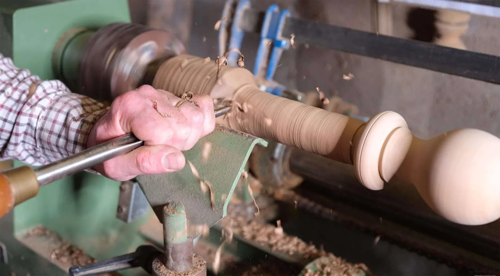
Tournage d'un pied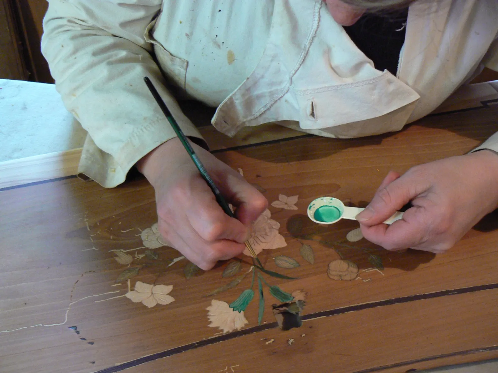
Retouche d'une marqueterie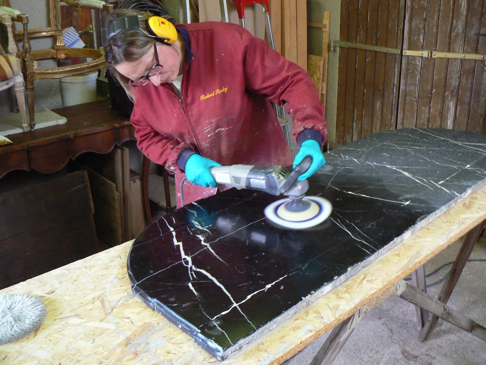
Polissage d'un marbre noirNotre passion pour l'histoire, l'architecture et le mobilier de notre pays est devenue notre métier. Nous nous tournons à présent vers l'avenir pour transmettre notre savoir-faire.
L'Atelier du Grand Moulin
Quelques-unes de nos réalisations.
Mobilier civil, art sacré, patrimoine ancien, création contemporaine : 64 réalisations sont à voir sur notre site.
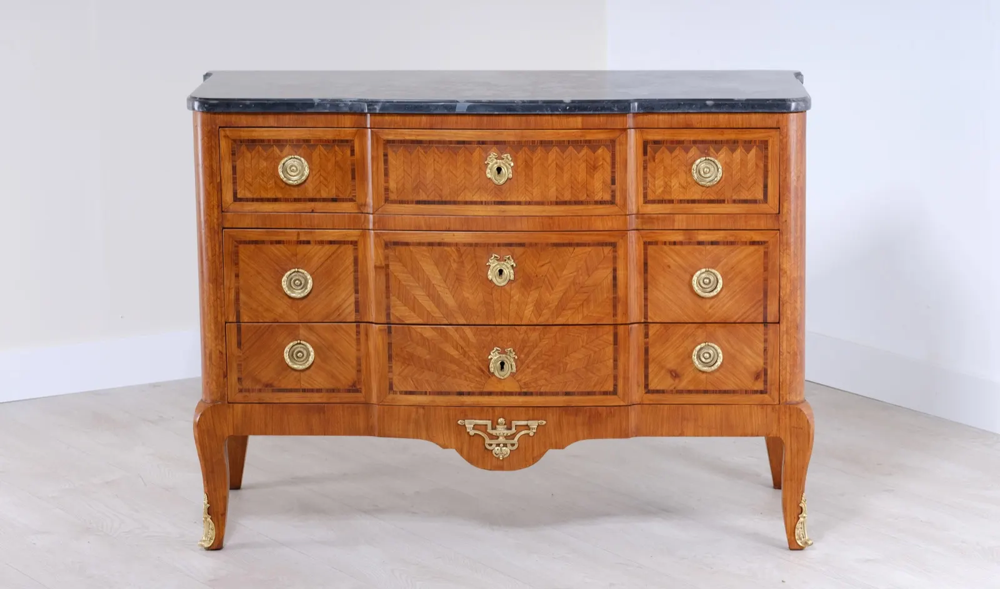
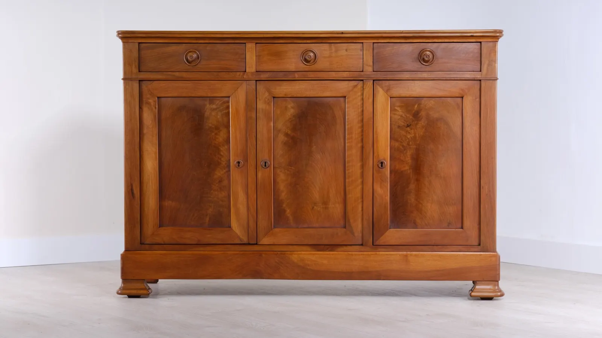
Parlons de votre meuble.
Restauration, fabrication sur mesure ou création : appelez l'atelier ou écrivez-nous, et décrivez-nous votre projet.
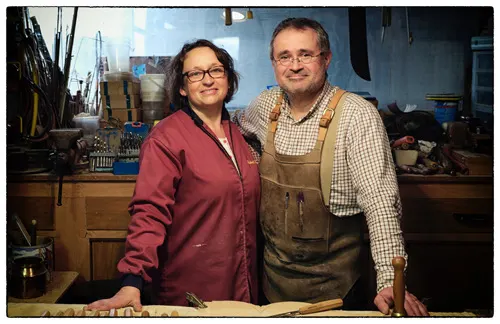
- Téléphone
- 02 41 39 76 22
- Adresse
- Lieu-dit du Grand Moulin
49070 Saint-Jean-de-Linières - Atelier du Grand Moulin